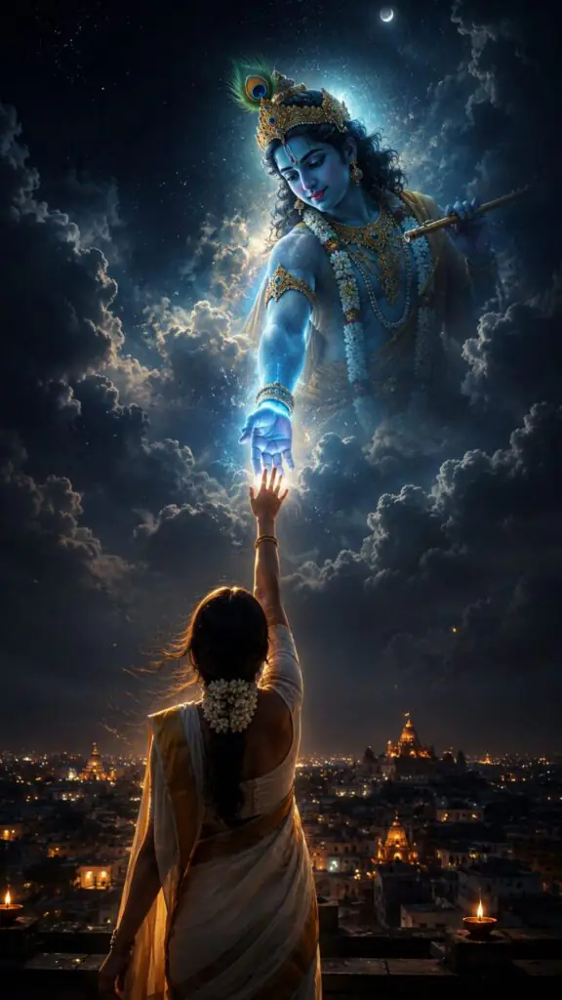
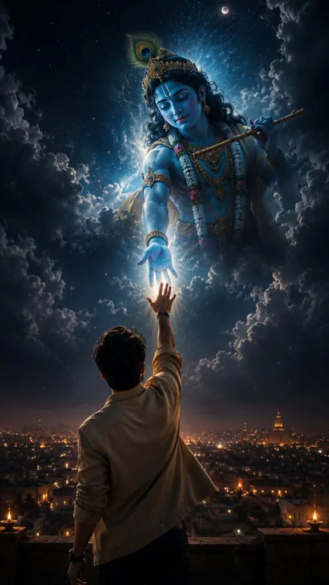
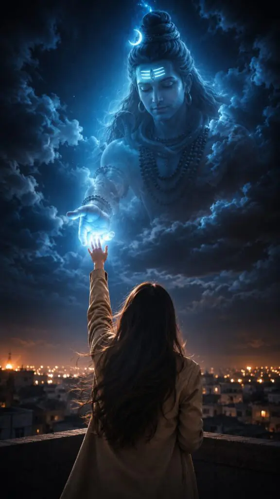
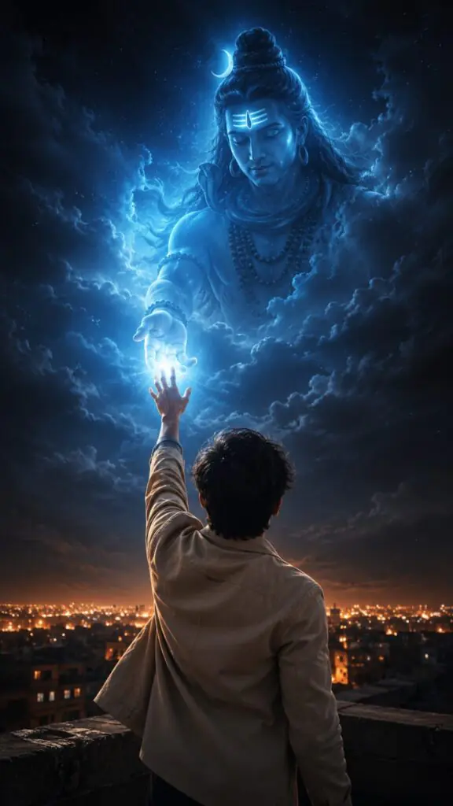
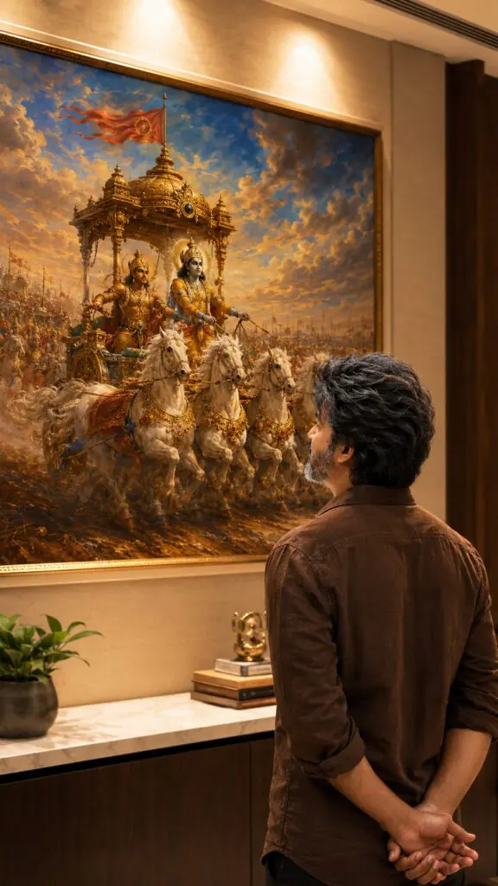
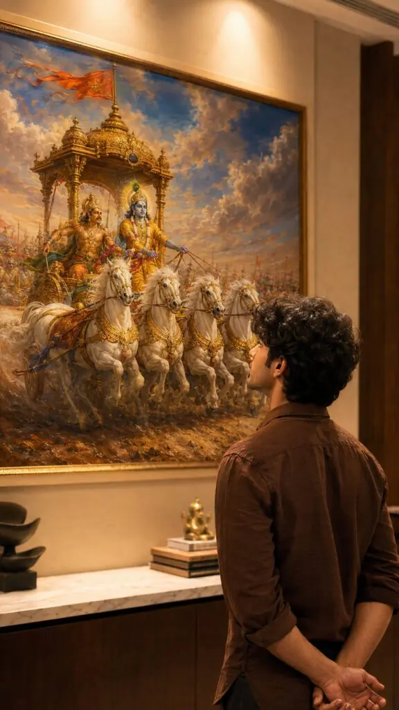

The trend of creating ultra-realistic Bhagwat Gita-inspired photos has become very popular on social media. These AI-generated images combine spirituality, cinematic photography, and realistic editing to create powerful and visually stunning artwork.
With the help of a well-written photo editing prompt, anyone can transform a simple portrait into a meaningful scene inspired by the teachings of the Bhagavad Gita. These images often feature warm lighting, detailed backgrounds, and a thoughtful atmosphere that reflects wisdom, peace, and self-reflection.
In this article, you will find an ultra-realistic Bhagwat Gita scene photo editing prompt that can help you create professional-looking images with AI tools while maintaining a natural and realistic appearance.
Want more awesome prompts?
Join our community and get the latest viral prompts daily.
Follow on Instagram





An ultra-realistic Bhagwat Gita scene photo editing prompt is a great way to create unique and inspiring images that blend modern technology with timeless spiritual themes. The right prompt can produce cinematic results that look natural, detailed, and emotionally powerful.
Whether you are creating content for Instagram, personal projects, or creative storytelling, a well-crafted Bhagwat Gita prompt can help you achieve stunning visual results. Focus on realistic details, balanced composition, and meaningful expressions to make the final image more impactful.
Use the prompt shared in this article and experiment with different styles to create beautiful Bhagavad Gita-inspired photos that stand out and leave a lasting impression.